Martial arts
Black belts in Judo and Karate · National-level winner
A little book about me
Kerala roots, a curious mind, 10 beloved cats, and a serious love for motorcycles, good food, and seeing the world.
Come take a look ↓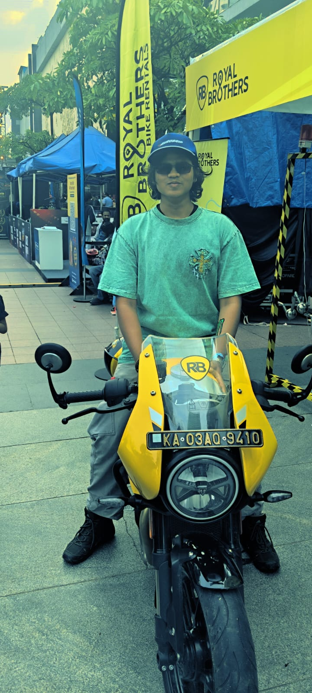
A bit about me
I’m from Kerala and currently studying BCA in Cyber Security at REVA University. I like discovering how things work, whether it’s technology or a new motorcycle.
I’m a black belt in Judo and Karate, and martial arts have been a big part of my life. I’ve competed at national level, and I also enjoy modelling, travelling, good food, and life with my 10 cats.
Currently learning
REVA University
Learning Python and C programmingThings I love
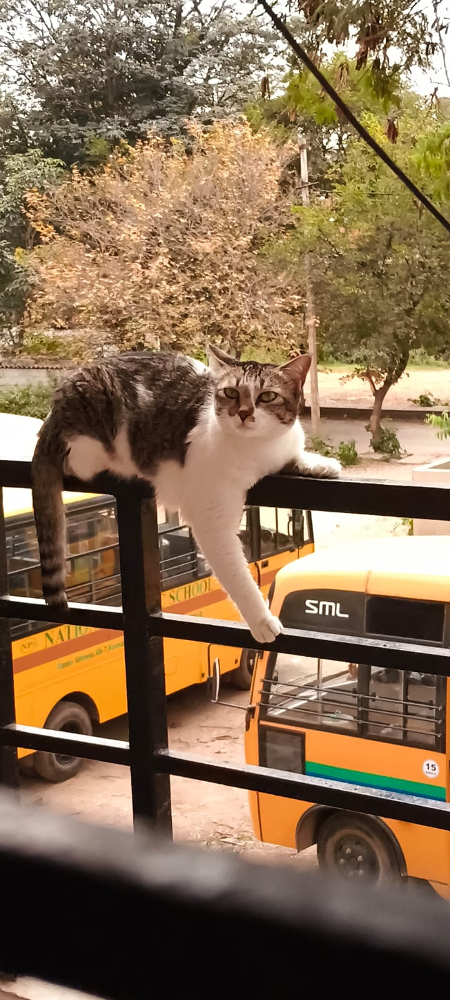
There’s always a little company at home—whether they’re lounging nearby, asking for attention, or making themselves comfortable everywhere.
♡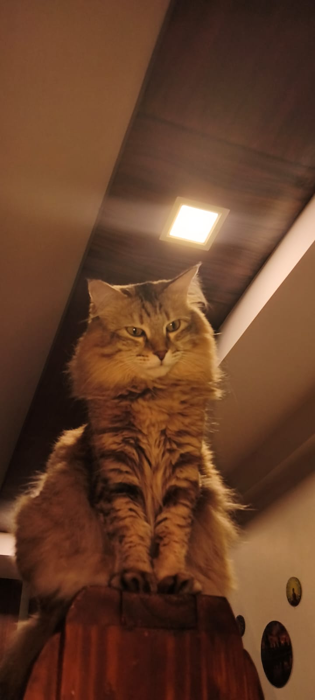
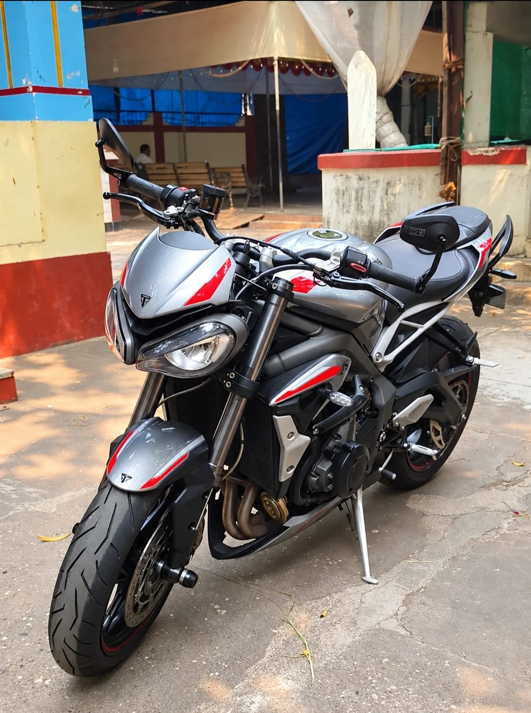
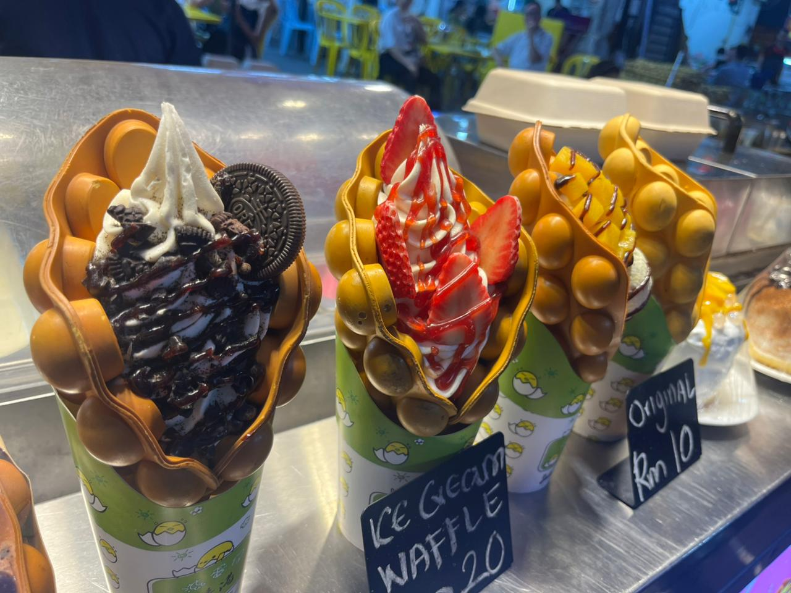
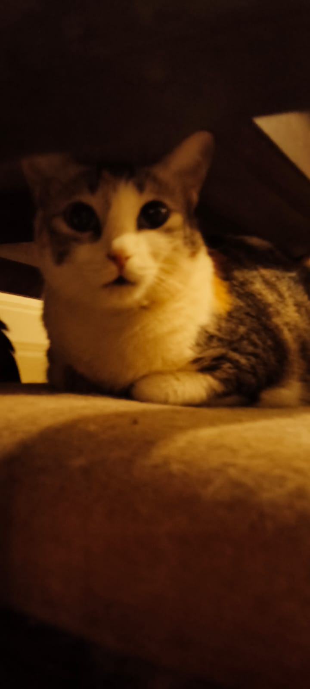
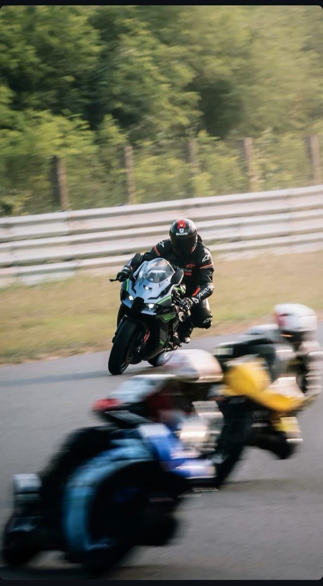
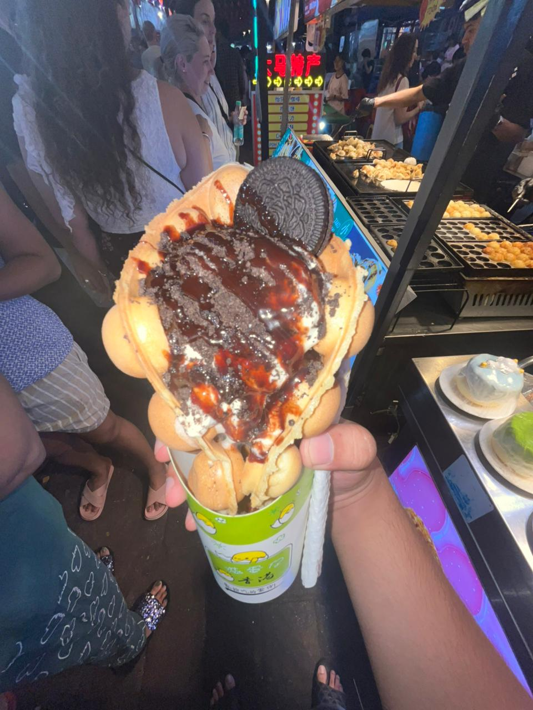
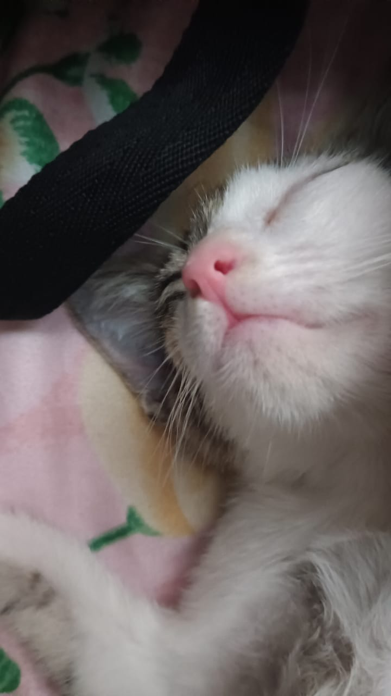
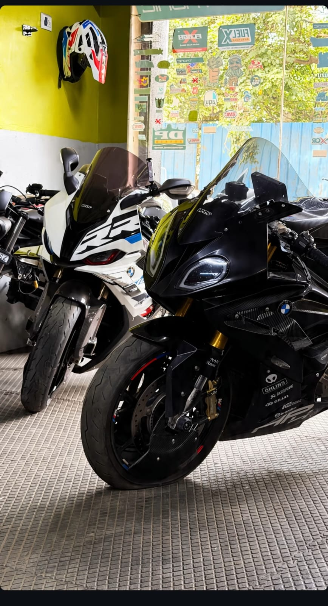
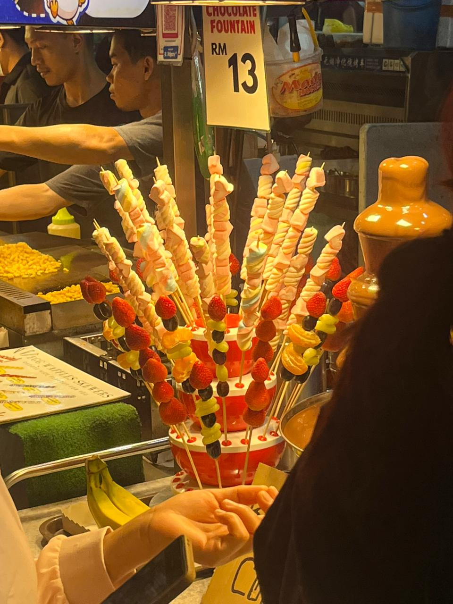
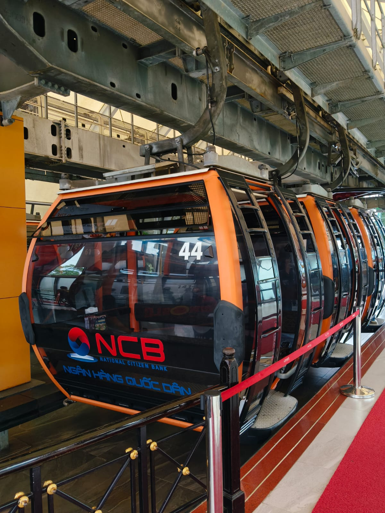
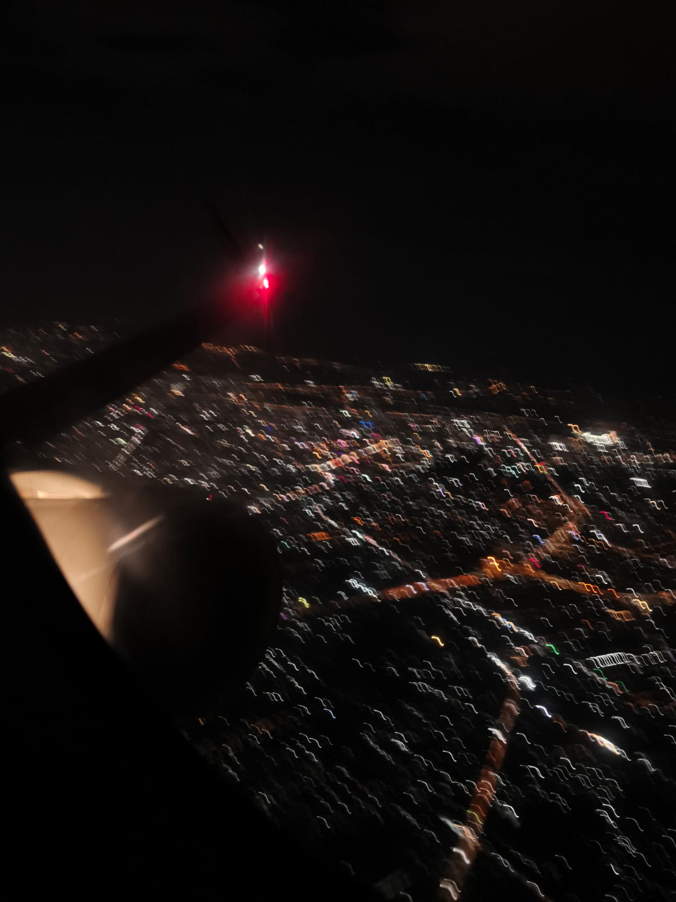
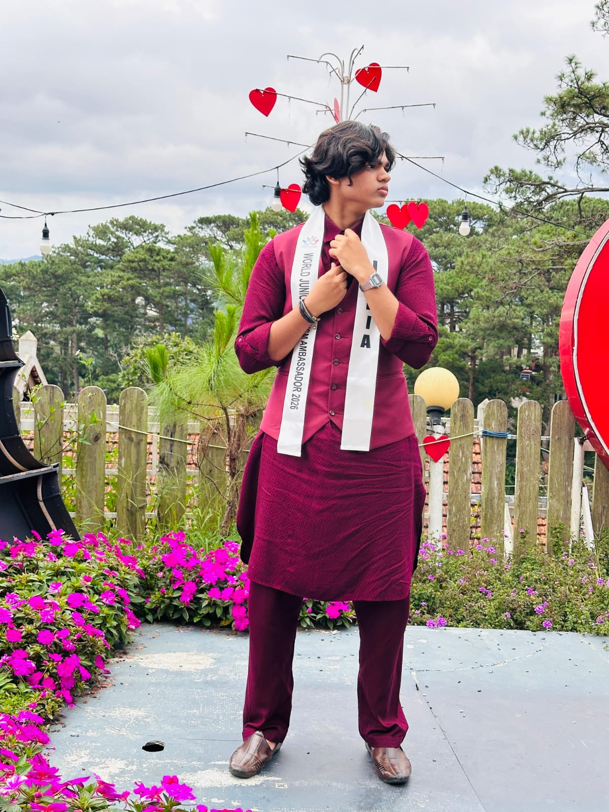
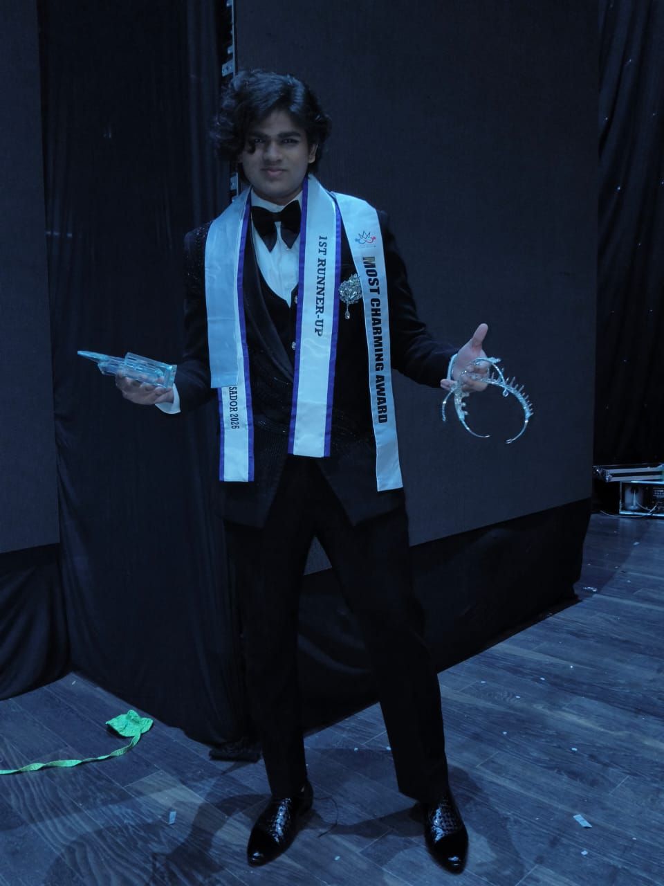
Proud moments
Black belts in Judo and Karate · National-level winner
3 national titles
2 international titles
More memories and milestones to come ✨
Postcard to my future self
I love travelling and hope to explore the world, meet new people, and collect stories from every place I visit.
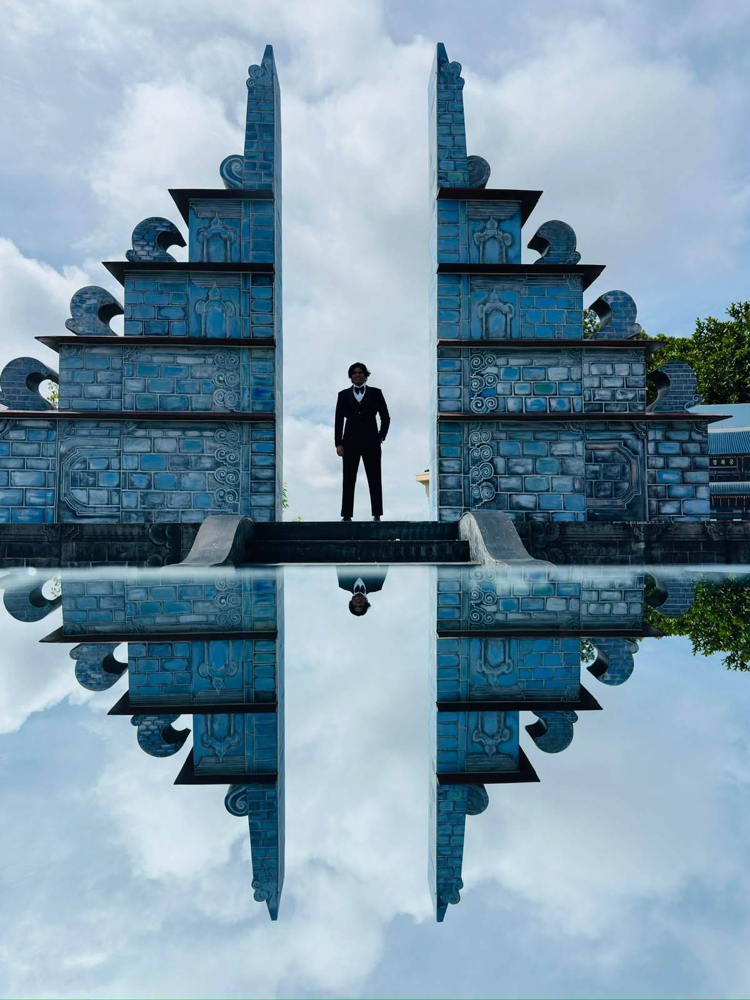
Your turn to say hello
For a chat, a project, or just to talk bikes.